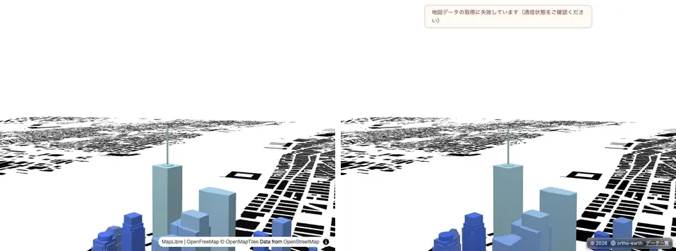
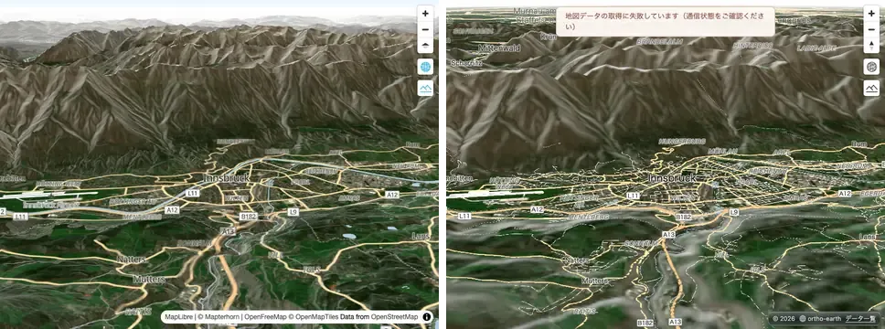
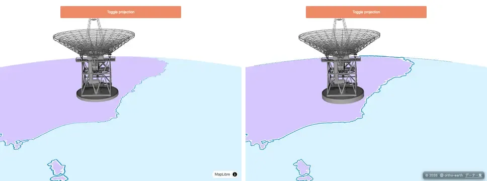

Last time I wrote that Cesium is a god. In truth there is one more god: MapLibre.
ortho-earth began by drawing maps the MapLibre way. While I was chasing Cesium, how did it look in front of this other god? Now that the Cesium side had come a long way, I decided to trace MapLibre once more.
With Cesium it is 3D against 3D, so level 1 went away. MapLibre is about putting a 2D map on a sphere, and that is not so simple. This is the record of going back and forth.
Cesium, continued
The Sandcastle re-shoots did not stop after v2.2.0. From v221 to v244, all 309 examples were re-shot more than 20 times, and each time one family was fixed.
| Shoot | 3 | 2 | 1 | 0 | What went in |
|---|---|---|---|---|---|
| v2.2.0 | 190 | 107 | 0 | 0 | Last time's final count (297 scored) |
| v221 | 196 | 101 | 0 | 0 | The re-shoot right after v2.2.0 |
| v233 | 207 | 91 | 0 | 0 | Imagery split view, 3D Tiles edge visibility, shapes clamped to terrain, time-dynamic WMTS (#845–#857) |
| v238 | 220 | 77 | 0 | 1 | Serving Sandcastle's images, rectangle rotation, 3D lines that stop at buildings, imagery as fine as Cesium's (#863–#866) |
| v244 | 223 | 75 | 0 | 0 | Front and back faces of closed shapes, 3D Tiles bounding spheres, Bing imagery, shadows from translucent 3D Tiles (#869–#900) |
Note: the table is what the gate counted (298 scored). The Sandcastle gallery adds the examples checked by eye, 303 in all, at 3/2/1/0 = 226 / 77 / 0 / 0. At v243 an imagery change (#894) briefly pushed level 0 up to 7, but the gate caught it and #900 put it back.
Back to MapLibre
MapLibre's 139 official examples were lined up the same way. A picture shot on real MapLibre GL JS 6.11.2 (r7) is compared, at the same time and from the same camera, with the same code running on the MapLibre-compatible API of @ortho-earth/globe. The levels mean the same as for Cesium. Two examples that cannot be graded are left out, so 137 are counted.
Measured again this morning (the v2.2.x main), it came to 3/2/1/0 = 85 / 40 / 12 / 0. Twelve examples only partly ran. Having just brought that to 0 on Cesium, I could not let it pass.
| When | 3 | 2 | 1 | 0 | What went in |
|---|---|---|---|---|---|
| v2.1.0 | 79 | 47 | 11 | 0 | When /maplibre/ was first built |
| This morning | 85 | 40 | 12 | 0 | The v2.2.x main, measured as is |
| Midday | 86 | 45 | 6 | 0 | MapLibre's default Mercator constraint, maxZoom 22, flyTo with MapLibre's choreography, querying clustered points, heatmap hits on a tilted map, the roof of zero-height extrusions |
| Afternoon | 87 | 45 | 5 | 0 | The vertical field of view set to MapLibre's 36.87° |
| v2.3.0 | 91 | 43 | 3 | 0 | A sphere at the centre's height, unproject on terrain by walking the ray, terrain exaggeration applied to the centre too, and the real pictures re-shot for four examples where OSM had blocked the tiles |
Note: the counts are on WebGPU (the Mac's real GPU). Everything was also run on WebGL2. The same 3 examples are at level 1 there, and the only difference is two examples that drop from 3 to 2 because of a single sample point on an icon.
Results
At v2.3.0 the 137 examples come to 3/2/1/0 = 91 / 43 / 3 / 0. Examples that only partly run went from 12 to 3. Every picture can be seen next to the real one in the MapLibre gallery. The gallery now has the same layout as Sandcastle, and its header and footer read in Japanese or English.
Real MapLibre on the left, ortho-earth (v2.3.0) on the right.
set-center-point-above-ground: a map without terrain with its centre held 541 m in the air. The picture already matched, but going between coordinates and screen points was 279 px off. MapLibre treats the plane at the centre's height as the ground. Only the MapLibre-compatible API now does the same (level 1 → 3)

display-a-hybrid-satellite-map-with-terrain-elevation: a satellite map of steep mountains. A click landed on the wrong slope, several kilometres away. It now walks the line of sight from near to far and closes in on the first point where it crosses the ground (queries 110/160 → 158/160, level 1 → 2)

add-a-3d-model-to-globe-using-threejs: a three.js model standing on the globe. The axes of custom layers on the globe had x and z swapped compared with MapLibre, so the antenna did not show

What was built
- The MapLibre-compatible API: a 36.87° vertical field of view, a sphere at the centre's height (no terrain with a numeric centerElevation), no underground overlay, MapLibre's default Mercator constraint, maxZoom 22, flyTo and easeTo with MapLibre's choreography
- Unproject on terrain: walking the ray where the elevation can be read synchronously (raster-dem), and the older iteration elsewhere (quantized-mesh and DEMs loaded through a custom protocol)
- Terrain exaggeration applied to the centre's height and to queryTerrainElevation, as in MapLibre
- Custom layers on the globe use MapLibre's axes (three.js models)
- A record of custom layers checked by eye, since they never show up in the sampled picture (eyechecked.json), and a ratchet that fails when any example drops a level (known.json)
- The /maplibre/ and /sandcastle/ galleries in the same layout, with the header and footer in Japanese and English
- On the Cesium side: imagery split view, 3D Tiles edge visibility, 3D lines that stop at buildings, front and back faces of closed shapes, shadows from translucent 3D Tiles
- Rendering: screen-space reflections (SSR), contact shadows, height fog, light shafts, rain, an illustration style (WebGPU)
What was given up
- add-live-realtime-data: the example keeps moving, and the camera at the moment of the shot does not line up with the real one
- display-html-clusters-with-custom-properties: the real one shows 12 cluster markers, ortho shows 13. The difference in clustering has not been traced
- navigate-the-map-with-game-like-controls: MapLibre's queries also return buildings it does not draw. ortho returns only what it draws, and that choice stays
- The example that reads quantized-mesh as a raster-dem source does not walk the ray. Every sample waits for a tile to be decoded, and 160 queries took 25 seconds
A stubborn bug
What took the longest this time was turning a click on terrain back into coordinates. Fixing steep slopes made the quantized-mesh example slow, and fixing the slowness made positions drift. Every fix brought a new problem in another example.
Even so, with the gate that shoots side by side with the real thing and the ratchet that fails when a level drops, it was clear on the spot where and what had broken. Along the way an older bug turned up: terrain exaggeration was never applied to the centre. In the end only terrain that can be read synchronously uses the new method, and everything else went back to the old way. Knowing when to stop digging is part of the method too.
Going back and forth between two gods, upstream still did not budge. That is how ortho-earth is developed.